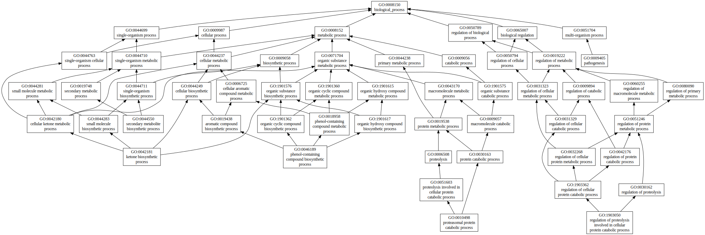

|
| Download full result of the above consensus prediction. |
| Click the graph to show a high resolution version. |
| (a) | CscoreGO is the confidence score of predicted GO terms. CscoreGO values range in between [0-1]; where a higher value indicates a better confidence in predicting the function using the template. |
| (b) | The graph shows the predicted terms within the Gene Ontology hierachy for Molecular Function. Confidently predicted terms are color coded by CscoreGO: |
| | [0.13,0.5) | [0.5,0.6) | [0.6,0.7) | [0.7,0.8) | [0.8,0.9) | [0.9,1.0] |
|
|
|

|
| GO term | CscoreGO | Name |
| GO:0008152 | 0.07 | metabolic process |
| GO:0044699 | 0.05 | single-organism process |
| GO:0071704 | 0.04 | organic substance metabolic process |
| GO:0044763 | 0.03 | single-organism cellular process |
| GO:0044550 | 0.03 | secondary metabolite biosynthetic process |
| GO:1903050 | 0.02 | regulation of proteolysis involved in cellular protein catabolic process |
| GO:0046189 | 0.02 | phenol-containing compound biosynthetic process |
| GO:0042181 | 0.02 | ketone biosynthetic process |
| GO:0010498 | 0.02 | proteasomal protein catabolic process |
| GO:0009405 | 0.02 | pathogenesis |
| Download full result of the above consensus prediction. |
| Click the graph to show a high resolution version. |
| (a) | CscoreGO is the confidence score of predicted GO terms. CscoreGO values range in between [0-1]; where a higher value indicates a better confidence in predicting the function using the template. |
| (b) | The graph shows the predicted terms within the Gene Ontology hierachy for Biological Process. Confidently predicted terms are color coded by CscoreGO: |
| | [0.08,0.5) | [0.5,0.6) | [0.6,0.7) | [0.7,0.8) | [0.8,0.9) | [0.9,1.0] |
|
|
|
|
| Download full result of the above consensus prediction. |
| Click the graph to show a high resolution version. |
| (a) | CscoreGO is the confidence score of predicted GO terms. CscoreGO values range in between [0-1]; where a higher value indicates a better confidence in predicting the function using the template. |
| (b) | The graph shows the predicted terms within the Gene Ontology hierachy for Cellular Component. Confidently predicted terms are color coded by CscoreGO: |
| | [0.14,0.5) | [0.5,0.6) | [0.6,0.7) | [0.7,0.8) | [0.8,0.9) | [0.9,1.0] |
|
|
|